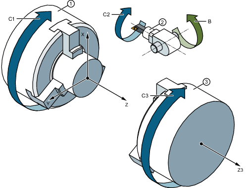
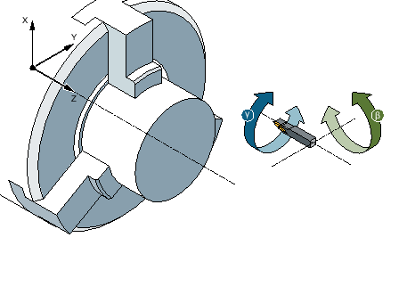
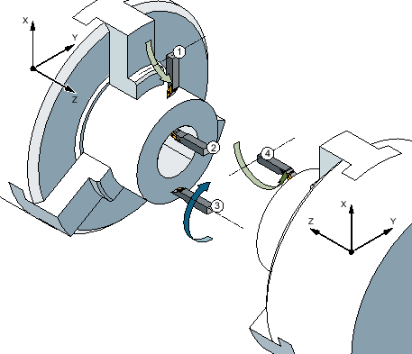

Mit einer zusätzlichen B-Achse haben Sie die Möglichkeit, Fräs- und Drehwerkzeuge auszurichten.
① | Hauptspindel |
② | Werkzeugspindel |
③ | Gegenspindel |
Die Grundstellung, in der alle Werkzeuge vermaßt sind, muss B=0 sein.
Beim Drehen können Sie über die B-Achse und die C-Achse der Werkzeugspindel das Werkzeug für spezielle Bearbeitungen ausrichten.
Beim Fräsen können Sie über die B- und die C-Achse der Haupt- bzw. der Gegenspindel das Werkstück so schwenken, dass Fräsen und Bohren auf schrägen Flächen möglich ist.
Die B-Achse wird auch für das Ausrichten der Werkzeuge bei der Stirn- und Mantelbearbeitung verwendet.
Für das Drehen mit Werkzeugausrichtung werden die Ausrichtwinkel β und γ benötigt.
β: Drehung um die Y-Achse (mit der B-Achse)
γ: Drehung um die Z-Achse (mit der Werkzeugspindel)
Die Ausrichtwinkel ermöglichen es, mit einem Werkzeug die verschiedensten Drehbearbeitungen (z.B. Längsbearbeitung außen und innen, Planbearbeitung mit Haupt- und Gegenspindel, Restmaterial) ohne Werkzeugwechsel durchzuführen.
① | Längsbearbeitung außen |
② | Längsbearbeitung innen |
③ | Planbearbeitung Hauptspindel |
④ | Planbearbeitung Gegenspindel |
In folgenden Fenstern wird Ihnen die B-Achse angezeigt:
bei der Positionsanzeige der Achsen im Istwerte-Fenster,
im Fenster "Positionieren" zur Positionierung der Achsen im Handbetrieb,
über den Softkey "Nullp.versch." lassen Sie sich in den Nullpunktverschiebungslisten die B-Achse anzeigen und legen die Verschiebung fest.